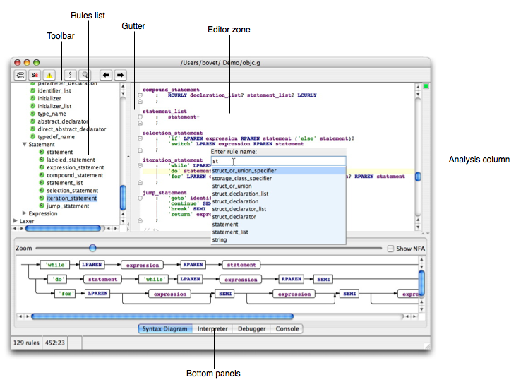
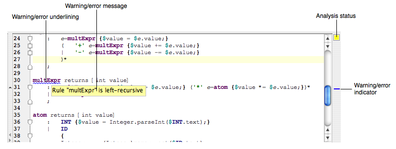
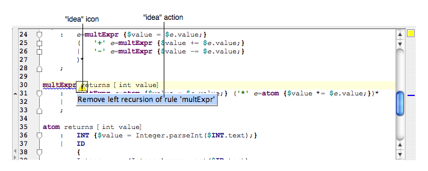

ANTLRWorks displays one editor window per grammar file. The editor is subdivided into zones, as shown in this image:

The main zones are:
The following emacs key-bindings are implemented in the editor:
|
Key-binding |
Description |
|
Control-e |
Move cursor to end of line |
|
Control-a |
Move cursor to beginning of line |
|
Control-f |
Move cursor forward |
|
Control-b |
Move cursor backward |
|
Control-p |
Go up one line |
|
Control-n |
Go down one line |
|
Control-d |
Delete the character under the cursor |
|
Control-k |
Delete characters from cursor position to end of line |
Press Control-space to invoke the auto-completion menu: it will display the list of all rules and tokens starting with the same typed prefix. Press Return to insert an item in the text.
It is possible to move rule by dragging their name in the rules list. The corresponding text will be moved in the grammar. To move the current rule using the keyboard only, press Control-Up Arrow or Control-Down Arrow to move a rule up or down.
ANTLRWorks uses several ways to display errors and warnings in the grammar. Let's take for example a left-recursive rule in a grammar. The following elements are used to indicate this problem (see picture below):

ANTLRWorks proposes for most of the warnings and errors some operations to correct it. To see if an operation is available for a particular error or warning, click in the corresponding element (in this example, the rule name) and wait 1 second: a warning icon will be displayed if an operation is available. Click again on this icon to display the list of operations: click finally on the operation to run. In this example, the operation available for a left-recursive rule is to remove this left-recursion: clicking on the operation displayed below will remove the left recursion.
